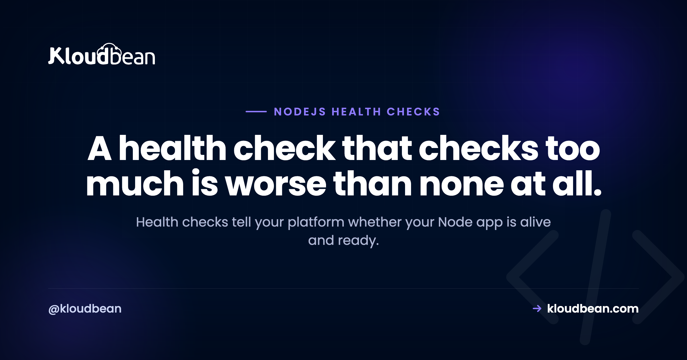

Node.js Health Checks: Liveness, Readiness, and What to Actually Check

Health checks look trivial, return 200 and move on, but the details decide whether your app self-heals or takes itself down. Get them right and the platform restarts a hung process, routes traffic only to instances that can serve it, and drains cleanly on deploy. Get them wrong, most commonly by checking your database inside a liveness probe, and a brief database hiccup can trigger a restart loop across every instance at once. This guide covers the two kinds of check, what belongs in each, and the code to do it properly in Node.
Expose two endpoints. A liveness check (like /healthz) that's cheap and just confirms the process is responding, used to decide whether to restart it. And a readiness check (like /readyz) that verifies critical dependencies such as the database and Redis, used to decide whether to send traffic. Keep dependency checks out of liveness, or a database blip will restart healthy apps and turn a small problem into an outage.
What a health check is for
A health check is an HTTP endpoint your platform or load balancer polls on a schedule to answer two questions: should I keep this process running, and should I send it traffic? Those are genuinely different questions, and conflating them is the root of most health-check trouble. The platform uses the answers to restart dead processes and to route requests only to instances that can actually handle them. That's the whole job: give the orchestrator honest, cheap signals it can act on.
Liveness vs readiness
Liveness answers "is this process alive, or is it wedged and needs a restart?" If the liveness check fails repeatedly, the platform restarts the process. Readiness answers "can this instance serve a request right now?" If readiness fails, the platform stops routing traffic to it but leaves it running, because it might recover in a moment. The classic example: an app that's booting and connecting to its database is alive but not yet ready. You want traffic held back until it's ready, but you definitely don't want it restarted for not being ready yet.
The big mistake: checking the database in liveness
This one causes real outages, so it's worth stating bluntly. If your liveness check queries the database and the database has a brief hiccup, every instance's liveness check fails at the same time, so the platform restarts all of them at once, and now you've turned a two-second database blip into a full restart storm while your apps thrash. Liveness should answer "is my process responding," nothing more. Dependency health belongs in readiness, where a failure pulls an instance out of rotation instead of killing it. My rule: a liveness probe should never be able to fail because of something outside the process.
What to check in each
Keep it disciplined:
- Liveness: nothing external. Just return 200. If the event loop is so wedged it can't even answer, that's exactly when you want a restart.
- Readiness: the dependencies you can't serve without, usually the database, sometimes Redis or a critical downstream. Check them with a short timeout so the probe itself stays fast.
The code
Two endpoints, two jobs. Liveness is dead simple; readiness checks dependencies and returns 503 when it can't serve:
// Liveness: cheap, no external calls. "Is the process responding?"
app.get("/healthz", (req, res) => {
res.status(200).send("ok");
});
// Readiness: "Can I actually serve traffic right now?"
app.get("/readyz", async (req, res) => {
try {
await pool.query("SELECT 1"); // database reachable?
await redis.ping(); // Redis reachable?
res.status(200).json({ status: "ready" });
} catch (err) {
res.status(503).json({ status: "not ready", error: err.message });
}
});The status codes matter: 200 means healthy or ready, and 503 (Service Unavailable) is the conventional "not ready, don't send me traffic." Platforms and load balancers understand those out of the box.
Keep checks cheap and fast
Health endpoints get hit constantly, often every few seconds per instance, so they must be cheap. Don't run heavy queries, don't hit every downstream service, and don't do anything that allocates a lot. For readiness, use a fast dependency check (a SELECT 1, a PING) with a short timeout, and consider caching the result for a second or two so a burst of probes doesn't stampede your database. A health check that's slow or expensive becomes its own source of load, which is a genuinely ironic way to cause the outage you were trying to detect.
Readiness and graceful shutdown
Readiness has a second job during shutdown. When your app receives SIGTERM on a deploy, the first thing it should do is flip readiness to failing, so the load balancer stops sending new requests, and only then drain the in-flight ones and exit. That ordering is what makes a deploy seamless: traffic is steered away before the process goes down. It's the natural partner to a shutdown handler, covered in graceful shutdown in Node.js.
| Liveness | Readiness | |
|---|---|---|
| Question it answers | Is the process alive? | Can it serve traffic now? |
| What to check | Nothing external, return 200 | Critical deps (DB, Redis) |
| On failure | Restart the process | Stop routing traffic to it |
| Typical endpoint | /healthz | /readyz |
| Cost | Trivial | Cheap, with a timeout |
How this fits your hosting and monitoring
Health checks are how the platform and your monitoring know the truth about your app. On Kloudbean your Node app runs always-on under PM2, so a proper liveness endpoint gives the process manager a clean signal to act on, and a readiness endpoint lets traffic and deploys behave correctly. Pair the same endpoints with external uptime monitoring so you're alerted the moment readiness starts failing, rather than finding out from users. The endpoints are yours to write, that's application logic, but they're what makes the surrounding automation trustworthy.

node.js Health Checks, in more depth
Health checks sit in the middle of your production ops. They pair with graceful shutdown and zero-downtime deployments for clean releases, with uptime monitoring for alerts, and with PM2 restart behavior when a liveness failure triggers a restart. The readiness dependency check connects to database connection pooling.
Prototype to production, without the babysitting.
Run the app as an always-on process with managed databases, Redis, object storage, and automatic backups beside it. Deploy from Git with live build logs, and keep the infrastructure someone else's problem.
- ✓ Managed databases
- ✓ Always-on processes
- ✓ Object storage
- ✓ Automatic backups
- ✓ Free SSL
- ✓ Git deploy
- ✓ Free migration
FAQ
What is a health check in Node.js?
It's an HTTP endpoint your platform or load balancer polls to decide whether to keep the process running and whether to send it traffic. You typically expose a cheap liveness endpoint and a readiness endpoint that verifies critical dependencies. The platform acts on the responses to restart dead processes and route traffic only to instances that can serve.
What's the difference between liveness and readiness?
Liveness answers "is the process alive," and a repeated failure triggers a restart. Readiness answers "can this instance serve a request right now," and a failure stops traffic without restarting it. A booting app connecting to its database is alive but not yet ready, you want traffic held back but not a restart.
Should a health check test the database?
In readiness, yes, with a short timeout. In liveness, no. If liveness queries the database and the database blips, every instance fails its liveness check at once and the platform restarts them all, turning a brief hiccup into a restart storm. Keep dependency checks in readiness, where a failure just pulls the instance out of rotation.
What status code should a health check return?
Return 200 when healthy or ready, and 503 (Service Unavailable) when not ready to serve. Those are the codes platforms and load balancers expect, so a 503 from readiness cleanly signals "don't route to me" without implying the process is dead. Avoid returning 200 when a critical dependency is actually down.
How often are health checks called?
Often every few seconds per instance, which is why they must be cheap. Heavy queries or fan-out calls in a health endpoint become a real load source. Use a fast dependency check with a timeout for readiness, and consider caching the result briefly so a burst of probes doesn't stampede your database.
Do I need both liveness and readiness endpoints?
For most production apps, yes, because they answer different questions and drive different actions (restart vs stop routing). A tiny app might get by with a single liveness endpoint, but as soon as you have a database or run behind a load balancer with deploys, a separate readiness check makes restarts and rollouts behave correctly.